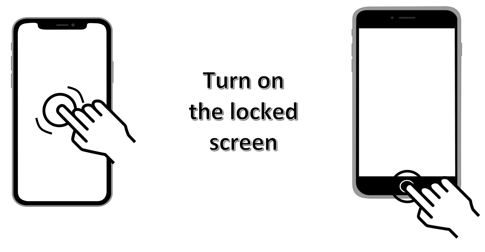
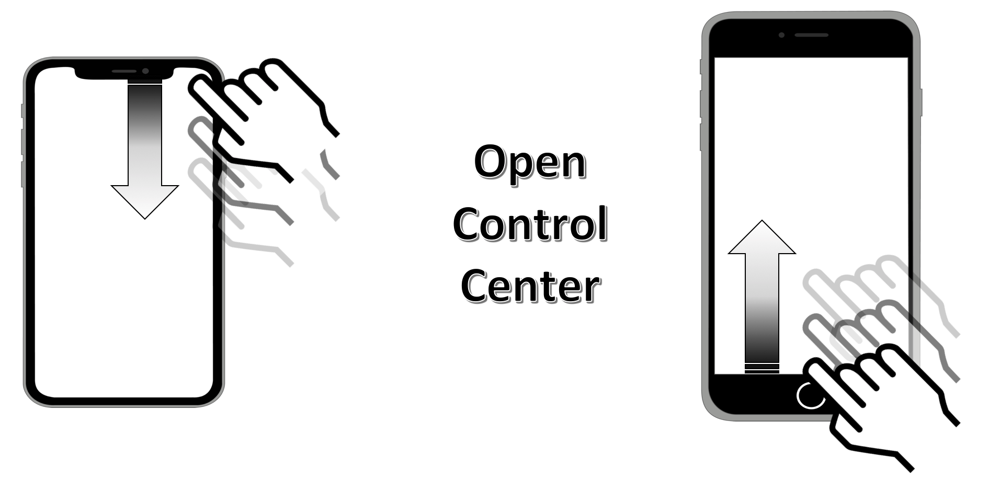
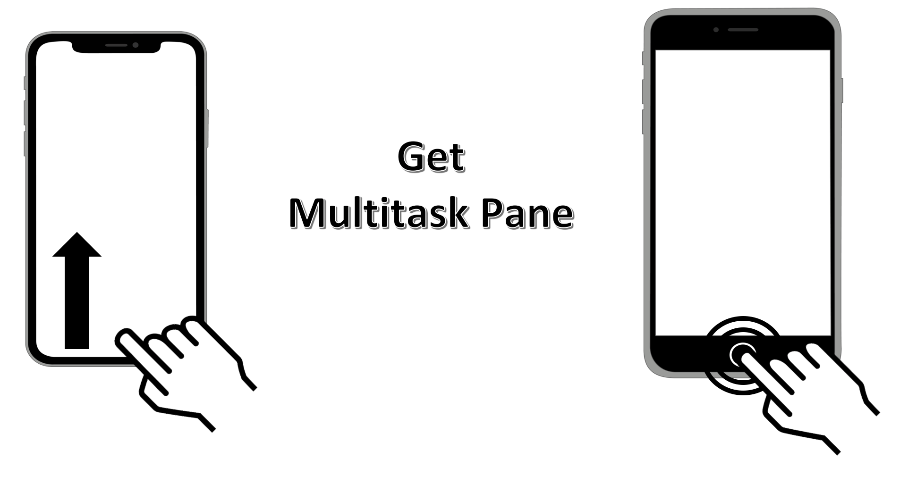
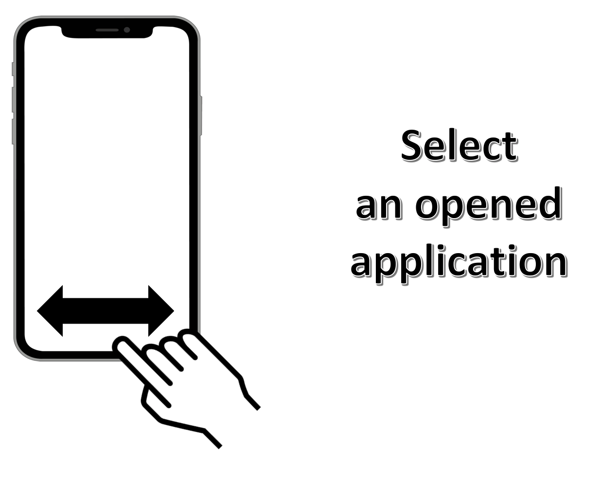
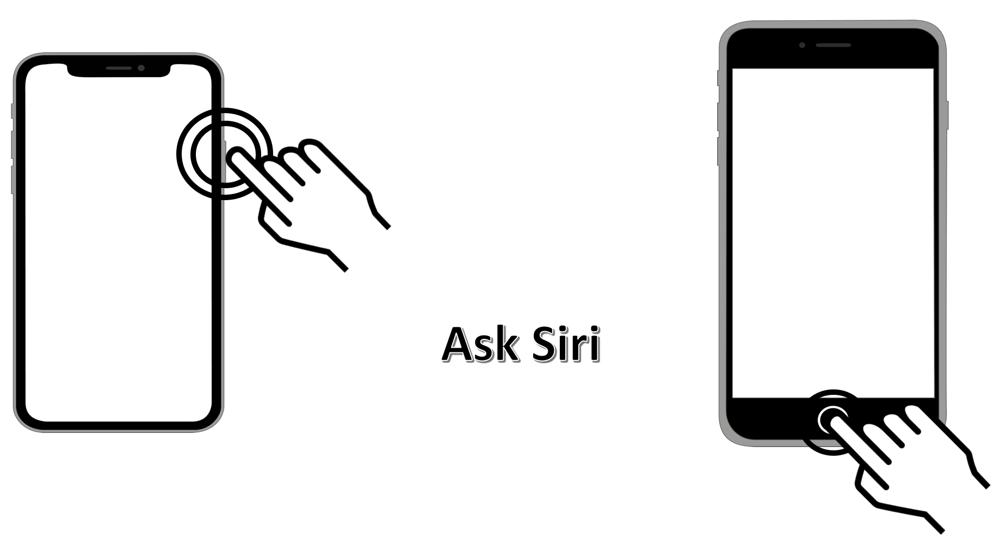
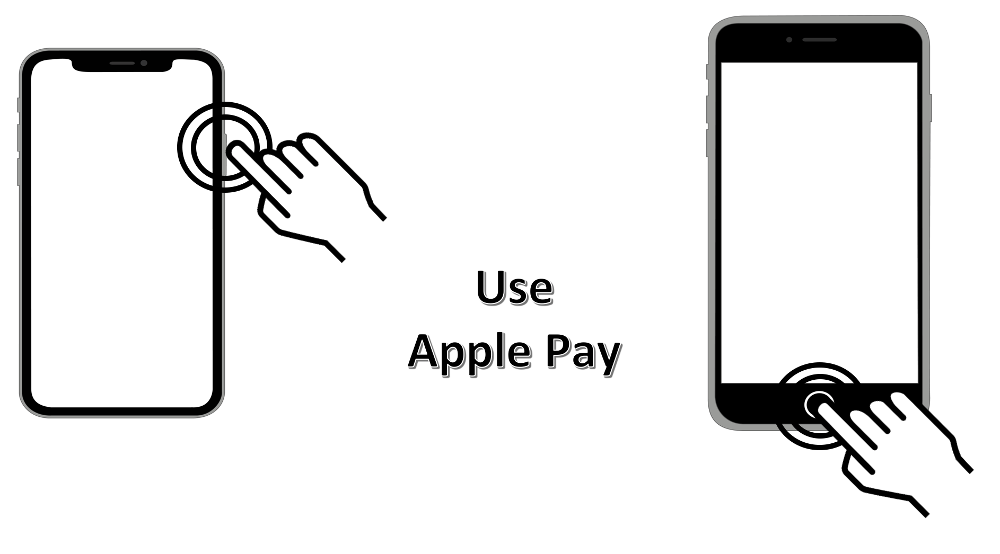
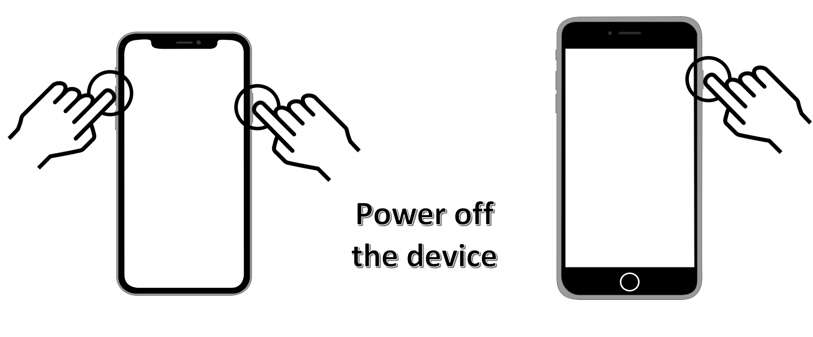

iPhoneX basic gestures
This page describes the iPhoneX common gestures thanks to textual explanations and illustrations so as to easily understand the movements to be done. Thereafter, illustrations with a home button device are also included to see possible differences.
- Go to Home Screen.
- Unlock the screen.
- Turn on the locked screen.
- Open Control Center.
- Get Multitask Pane.
- Select an opened application.
- Reachability.
- Ask Siri.
- Use Apple Pay.
- Take a screenshot.
- Power off the device.
Gesture : flick up with 1 finger from the bottom edge of the screen.

Unlock the screen
Gesture : flick up with 1 finger from the bottom edge of the locked screen. Result : screen automatic unlock with the activated faceID functionality. The gesture is exactly the same as previously explained but deals with a locked screen in our case.
Gesture : simple-tap with 1 finger anywhere on the screen. 
Gesture : flick down with 1 finger from the upper right corner of the screen. 
Gesture : swipe up and hold with 1 finger from the bottom edge of the screen until seeing a list of opened applications. This swipe may also end up to the right side of the screen to obtain the same result. Result : display of all opened applications. 
Gesture : swipe right or left with 1 finger in the lowest part of the screen. 
Gesture : flick down with 1 finger from the lowest part of the screen.
A flick up will rise the top of the minimized page up to the top of the screen.

Gesture : press and hold the power side button until the Siri screen appears (1 or 2 seconds max). 
Gesture : double-click the power side button until the Apple Pay screen appears. 
Gesture : rapid click on the power side and the volume up buttons at the same time.
The screenshot is recorded in the Photos application of the device.

Gesture : press and hold the power side and the volume up buttons at the same time. Result : updated screen display with a choice for powering off the device. 